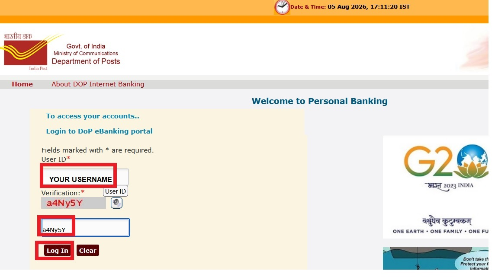
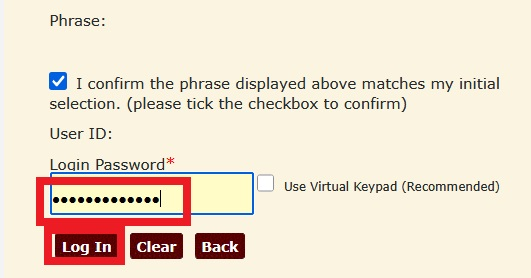
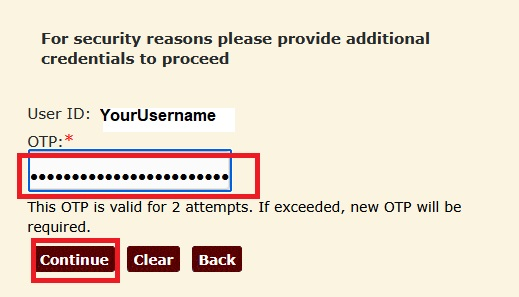
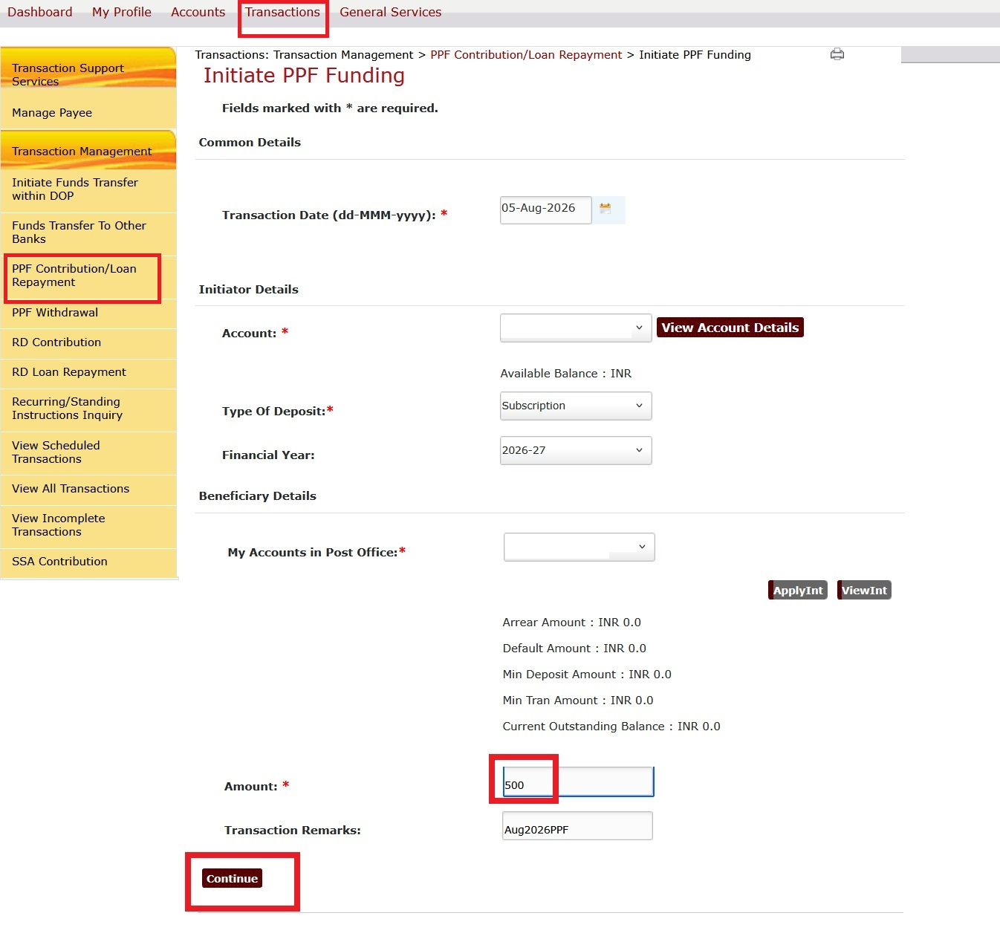

|
Steps to pay PPF amount using online at post office internet banking. Initially logon at indian post office https://ebanking.indiapost.gov.in |
|
Enter your user name and automated verification code  |
|
Enter your password and click Login.  |
|
Enter the OTP received at your mobile and click Continue  |
|
Click Transactions. Click PPF Contribution at left pane. Enter the amount which you provide to your PPF. Click continue. Enter your transaction password. After that enter your OTP. Post office internet banking allow the amount greater than 250.00 Mobile IPPB allow the minimum amount of 50.00 PPF amount needs to be multiples of 50.00 INR.  |